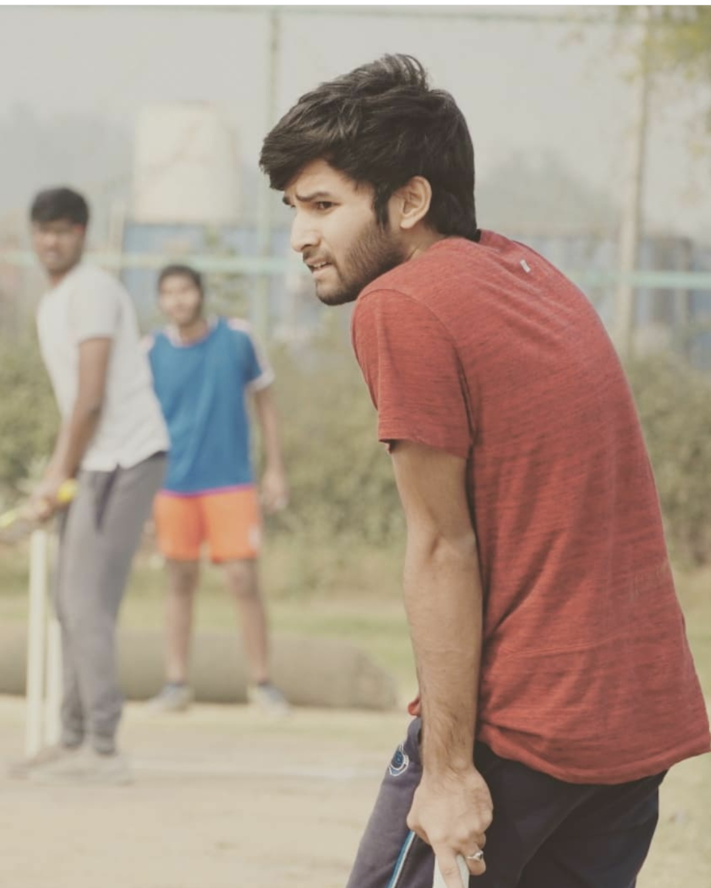

Represented Bennett in cricket


Cricket helped me to be physically fit and mentally strong and also created discipline in my life and Since a sport requires obedience towards a goal, it enlisted hard work in me. And also sports teaches you real-life lessons like how to face the pressure situations and also in a sport you will go through a difficult phase like injuries as I got a blood clot in my left hip when I slipped and fell down while bowling, it took me around 4 months to recover and after facing these difficult situations i learned that whenever you phase these type of situations you need to grow through it rather than going through it..